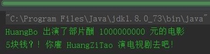
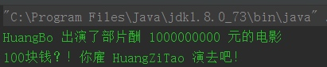
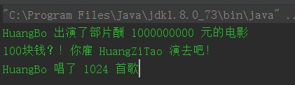

一.回顾静态代理
为了加深理解我们回顾一下静态代理，定义一个规定行为的明星电影接口 IMovieStar ：
/**
* 影星接口，定义影星的基本行为
* Created by zhangshixin on 8/25/2016.
*/
public interface IMovieStar {
/**
* 演电影
* @param money 演电影的片酬,以 int 为单位就够了，除了星爷，没听说谁的片酬能上亿
*/
void movieShow(int money);
/**
* 演电视剧
* @param money 演电视剧的片酬
*/
void tvShow(int money);
}
再定义一个 IMovieStar 的实现类 Star ：
/**
* 明星，可能是影歌双栖
* Created by zhangshixin on 8/25/2016.
*/
public class Star implements IMovieStar{
private String mName;
public Star(String name) {
mName = name;
}
@Override
public void movieShow(int money) {
System.out.println(mName + " 出演了部片酬 " + money + " 元的电影");
}
@Override
public void tvShow(int money) {
System.out.println(mName + " 出演了部片酬 " + money + " 元的电视剧");
}
}
最后定义个代理类 Agent，它引用了一个 Star 对象，并且对 Star 的行为进行了控制：
/**
* 经纪人，代理某个明星，有活动、广告、电影都是先找经纪人沟通
* Created by zhangshixin on 8/25/2016.
*/
public class Agent implements IMovieStar {
/**
* 代理的明星
*/
Star mTarget;
public Agent(Star target) {
mTarget = target;
}
@Override
public void movieShow(int money) {
if (money < 30000000) {
System.out.println(money + "块钱？！你雇 HuangZiTao 演电影去吧！");
return;
}
mTarget.movieShow(money);
}
@Override
public void tvShow(int money) {
if (money < 30000000) {
System.out.println(money + "块钱？！你雇 HuangZiTao 演电视剧去吧！");
return;
}
mTarget.tvShow(money);
}
}
最后进行单元测试：
@Test
public void testMovieShow() throws Exception {
Star huangBo = new Star("HuangBo");
Agent agent = new Agent(huangBo);
// 网上查到，2016年黄渤的片酬达到了 3000W ，这得敲多少年代码额呜呜
agent.movieShow(1000000000);
agent.tvShow(5);
}
运行结果：

可以看到，被代理类 Star 只需要完成自己的功能，不用因为业务逻辑而频繁修改代码，取而代之的是用 Agent 来做中间人，由它来代替 Star 完成一些业务操作。
二.静态代理弊端
我们可以看到，
- 我们需要在运行前手动创建代理类，这意味着如果有很多代理的话会很累哎；
- 其次代理类 Agent 和 被代理类 Star 必须实现同样的接口，万一接口有变动，代理、被代理类都得修改，容易出问题。
三.主角出场：动态代理
动态代理 与 静态代理 最大的区别就是不用我们创建那么多类，敲那么多代码。在程序运行时，运用反射机制动态创建而成。
JDK 中为我们提供了 Proxy 类来实现动态代理，其中最重要的方法是 newProxyInstance：
public static Object newProxyInstance(
ClassLoader loader,
Class<?>[] interfaces,
InvocationHandler invocationHandler)
throws IllegalArgumentException {
//...方法内容略去
}
参数介绍：
- ClassLoader loader // 被代理类的类加载器，用来创建代理类
- Class<？>[] interfaces //被代理类实现的接口，创建的代理类会实现这些接口
- InvocationHandler invocationHandler //最关键的接口！它只有一个 invoke 方法，是代理类进行 拦截操作 的入口，一般需要自定义一个 Handler 来实现方法增强。
四.举个栗子
我们自定义一个 Handler 来实现上述静态代理例子中 经纪人对片酬的控制：
/**
* 自定义的动态代理处理器
* Created by zhangshixin on 8/26/2016.
*/
public class ProxyHandler implements InvocationHandler {
//被代理对象
private Object mTarget;
public ProxyHandler(Object target) {
this.mTarget = target;
}
/**
* 方法拦截，可以进行一些额外操作
* @param proxy
* @param method 拦截的方法
* @param args 方法对应的参数
* @return
* @throws Throwable
*/
@Override
public Object invoke(Object proxy, Method method, Object[] args) throws Throwable {
String methodName = method.getName();
if (methodName.equals("movieShow") || methodName.equals("tvShow")) {
if (args[0] instanceof Integer && ((int) args[0]) < 300000000) {
System.out.println(((int) args[0]) + "块钱？！你雇 HuangZiTao 演去吧！");
return null;
}
}
Object result = method.invoke(mTarget, args);
return result;
}
/**
* 获取代理
* @return
*/
public Object getProxy() {
return Proxy.newProxyInstance(mTarget.getClass().getClassLoader(), mTarget.getClass().getInterfaces(), this);
}
}
可以看到，我们可以在 invoke 方法中，根据 method 的名称、创建类等信息进行相应的拦截、处理。
注意！ 在 ProxyHandler中我们创建了 getProxy() 方法，这个方法用于调用 Proxy.newProxyInstance(…) 方法生成代理类。
单元测试：
@Test
public void testInvoke() throws Exception {
Star huangBo = new Star("HuangBo");
ProxyHandler proxyHandler = new ProxyHandler(huangBo);
IMovieStar agent = (IMovieStar) proxyHandler.getProxy();
agent.movieShow(1000000000);
agent.tvShow(100);
}
走两步：

可以看到，使用时只需要传入明星即可，以后即使这个 IMovieStar 接口修改，也不会影响到经纪人。
除此以外，即使这个明星新增了其他功能，经纪人也不必修改太多。比如黄渤早年其实是个歌手，唱歌不得志只好去演戏，成为影帝后人们才关注他的歌声（真是个“看脸、看名”的世界）：
/**
* 明星，可能是影歌双栖
* Created by zhangshixin on 8/25/2016.
*/
public class Star implements IMovieStar, ISingerStar {
private String mName;
public Star(String name) {
mName = name;
}
@Override
public void movieShow(int money) {
System.out.println(mName + " 出演了部片酬 " + money + " 元的电影");
}
@Override
public void tvShow(int money) {
System.out.println(mName + " 出演了部片酬 " + money + " 元的电视剧");
}
/**
* 黄渤早年其实是个歌手！唱歌一流
* @param number 歌曲数
*/
@Override
public void sing(int number) {
System.out.println(mName + " 唱了 " + number + " 首歌");
}
}
要使用明星的唱歌功能，就要返回一个 ISingerStar 类型的经纪人，这里
@Test
public void testInvoke() throws Exception {
Star huangBo = new Star("HuangBo");
ProxyHandler proxyHandler = new ProxyHandler(huangBo);
IMovieStar agent = (IMovieStar) proxyHandler.getProxy();
agent.movieShow(1000000000);
agent.tvShow(100);
//黄渤早年其实是个歌手！唱歌不得志只好去演戏，成为影帝后人们才关注他的歌声，真是个“看脸、看名”的世界
ISingerStar singerAgent = (ISingerStar) proxyHandler.getProxy();
singerAgent.sing(1024);
}
运行结果：

五.案例浅析：Retrofit 中的动态代理
我们知道，Retrofit 是使用 依赖注入+ 动态代理，其中动态代理的入口就是这句：
// 这一句跟我们的动态代理有些相似，都是传入一个接口
GankService gankService = retrofit.create(GankService.class);
我们进去一探究竟：
public <T> T create(final Class<T> service) {
//...省略本文无关内容
return (T) Proxy.newProxyInstance(service.getClassLoader(), new Class<?>[] { service },
new InvocationHandler() {
private final Platform platform = Platform.get();
@Override public Object invoke(Object proxy, Method method, Object... args)
throws Throwable {
// If the method is a method from Object then defer to normal invocation.
if (method.getDeclaringClass() == Object.class) {
return method.invoke(this, args);
}
if (platform.isDefaultMethod(method)) {
return platform.invokeDefaultMethod(method, service, proxy, args);
}
ServiceMethod serviceMethod = loadServiceMethod(method);
OkHttpCall okHttpCall = new OkHttpCall<>(serviceMethod, args);
return serviceMethod.callAdapter.adapt(okHttpCall);
}
});
}
我们可以看到，自定义的请求接口中的每个方法都会被拦截，然后根据方法声明类、调用平台等筛选要控制的方法，最后将要进行网络请求的方法进行转换、适配，最后返回一个网络请求代理类。
了解动态代理后，再看这段代码不是那么吃力了吧！Retrofit 我们暂且了解到这，等掌握更多设计模式、网络基础后再进行具体的解析。
六.总结
上篇文章通过明星与经纪人的关系介绍了静态代理，不好之处在于一个经纪人只能代理一个明星，一旦明星有变动，或者想要代理其他明星时，需要修改、创建经纪人，大量使用这种静态代理，会使我们系统内的类的规模增大，并且不易维护；
而动态代理模式，做到了”一个经纪人代理 N 个明星“，大大减少类的创建、修改成本。此外动态代理还符合 AOP (面向切面编程) 思想，在很多场合都有使用。
由 Proxy 类的静态方法创建的动态代理类具有以下特点：
- 动态代理类是 public 、final 和非抽象类型的；
- 动态代理类继承了 Java.lang.reflect.Proxy 类；
- 动态代理类的名字以 $Proxy 开头；
- 动态代理类实现 newProxyInstance() 方法中参数 interfaces 指定的所有接口；
JDK 动态代理的实现方式：
1. 自定义实现 InvocationHandler
2. 根据方法信息进行拦截、控制
3. 调用时传入代理对象
4. 根据要使用方法决定返回代理类的类型
转载自：http://blog.csdn.net/u011240877/article/details/52334547